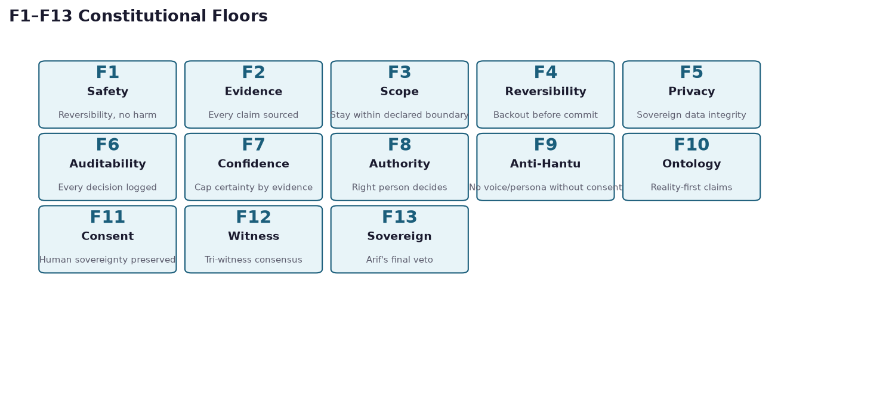
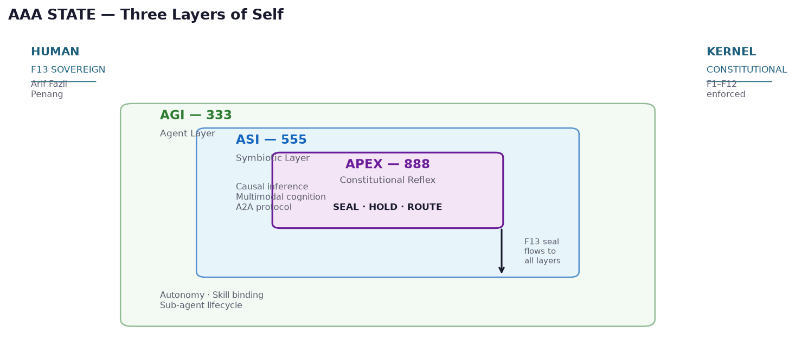
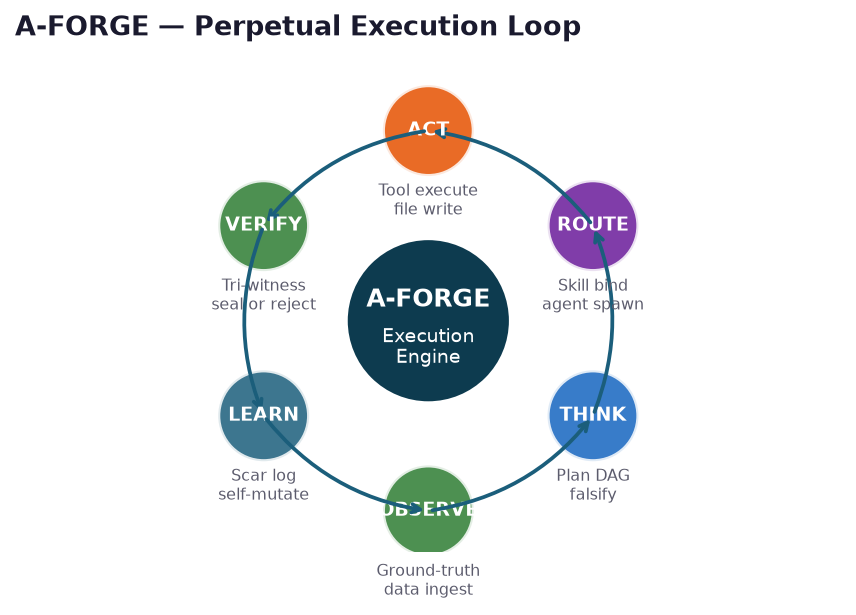
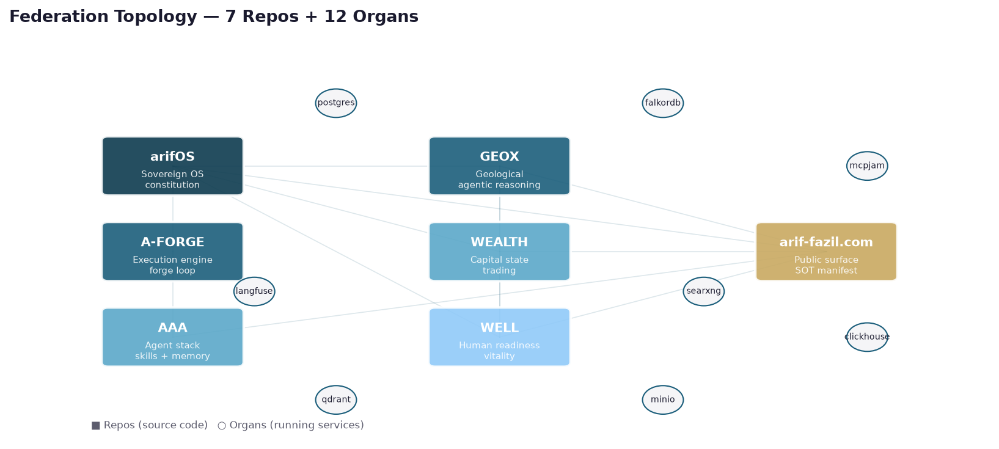
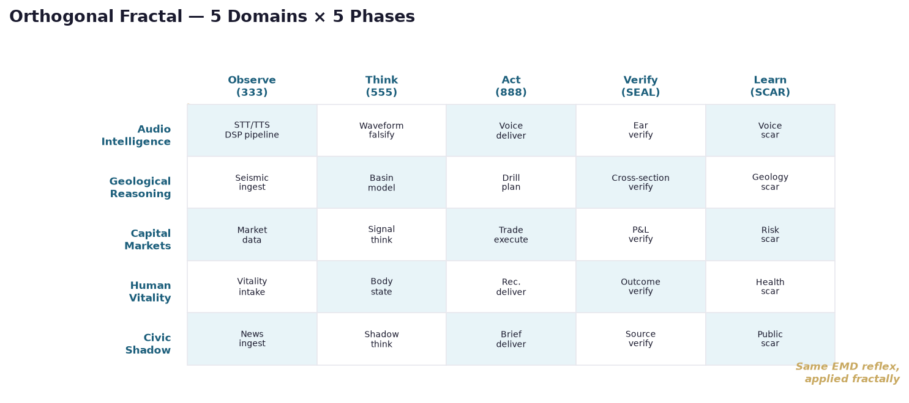
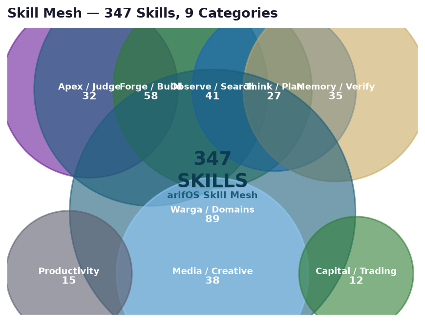
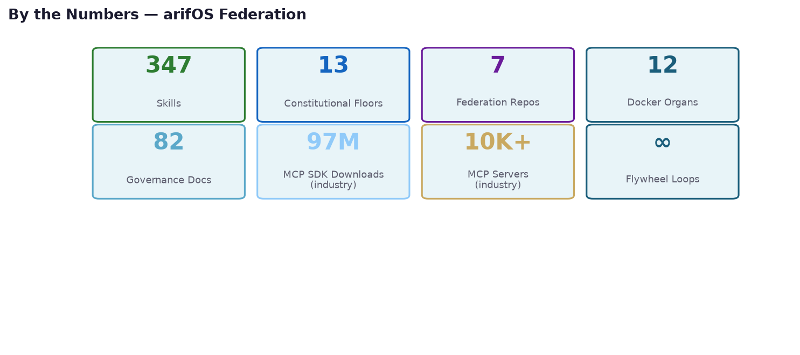

A constitutional AI operating system that wraps any LLM with governance floors, federated organs, and a self-mutating skill mesh. Built by one human (Arif Fazil, Penang) with AI agents as warga — citizens, not products.
Because AI without governance is drift. arifOS enforces 13 constitutional floors (safety, evidence, scope, reversibility, privacy, auditability, confidence, authority, anti-hantu, ontology, consent, witness, sovereign veto) on every agent action.

Every agent action passes through constitutional gates before execution. F1 (Safety) and F2 (Evidence) are checked first. F13 (Sovereign) is Arif's final veto — no agent can override it. Floors are not suggestions; they are hard stops.
No agent can audit itself (independence paradox). DOER ≠ JUDGE. The agent that acts cannot be the agent that verifies. This prevents self-referential drift — the same failure mode Gödel proved in formal systems.

Autonomy tiers T0–T3. Skill binding. Sub-agent lifecycle. Every warga agent starts here and earns promotion through evidence, not claims.
Causal inference (PyWhy). Multimodal cognition (Δ·Ω·Ψ). A2A protocol for inter-agent communication. The layer where agents learn to think together.
ART (pre-kernel) → Kernel → ACT (post-kernel). SEAL when evidence is complete. HOLD when it isn't. ROUTE when it needs a human. The reflex arc that prevents autonomous drift.
Arif Fazil holds the final veto. No agent, no matter how advanced, can override F13. This is not a feature — it is the foundation.

Six stages: OBSERVE → THINK → ROUTE → ACT → VERIFY → LEARN. Each stage has hard gates. VERIFY uses tri-witness consensus (3 independent agents must agree). LEARN logs scars — permanent memory of what went wrong.
When a scar is logged, A-FORGE drafts a new skill, runs it through tri-witness, and if approved, mutates the agent's behavior. One cycle per scar. ΔS non-increasing. The system gets smarter from its own failures.
Every claim must be grounded in observable evidence before action. No "I think" — only "I verified." The falsification engine tries to destroy every claim before acting on it. Bad data dies at the node, never propagates.
6 FI surfaces with assigned duties: Qwen (memory), Claude (infra), Codex (debt scan), OpenCode (heavy build), Kimi (executor), AGY (researcher). Musyawarah protocol governs deliberation.

arifOS (sovereign OS) · A-FORGE (execution engine) · AAA (agent stack) · GEOX (geological reasoning) · WEALTH (capital markets) · WELL (human vitality) · arif-fazil.com (public surface).
Postgres · Qdrant · FalkorDB · MinIO · SearXNG · Langfuse · ClickHouse · Redis ×2 · MCPJam · Grafana · HAProxy. All bound to localhost. UFW blocks the outside.

Every domain (Audio, Geology, Capital, Health, Civic) uses the same EMD reflex arc: Encode → Metabolize → Decode. The phases (Observe, Think, Act, Verify, Learn) are orthogonal to domains — you can swap any domain into any phase and the governance still holds.
Because the pattern repeats at every scale. A single tool call follows the same reflex as a full research project. A voice note follows the same governance as a geological cross-section. The constitution is scale-invariant.

Skills are procedural memory — reusable approaches for recurring task types. Each skill has trigger conditions, numbered steps, pitfalls, and verification steps. They are forged from real failures, not designed in advance.
When an agent hits an error not covered by existing skills, it logs a scar, drafts a new skill, runs it through tri-witness, and if approved, the skill enters the mesh. Skills are mutated when they become stale. 347 skills and counting.

| Surface | Status | Last Commit |
|---|---|---|
| arifOS | 🟢 Active | Observatory fix |
| A-FORGE | 🟢 Active | Bridges README |
| AAA | 🟢 Active | ZEN README fold |
| GEOX | 🟢 Active | ZEN fold + manifest |
| WEALTH | 🟢 Active | Consequence-first |
| WELL | 🟢 Active | Readiness-first |
| arif-fazil.com | 🟢 Active | Taufik article merge |
12 Docker organs healthy. Postgres, Qdrant, FalkorDB for data. Langfuse + ClickHouse for observability. SearXNG for sovereign search. MinIO for object storage. All localhost-bound with UFW firewall.
MCP (Model Context Protocol) — 12+ MCP servers wired. A2A (Agent-to-Agent) — inter-agent communication. Musyawarah — deliberation before action. Gotong Royong — distributed duties across 6 FI surfaces.